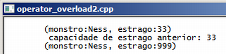

Curso completo de linguagem C++
Gameprog - Escola de programação de jogos digitais
Contato: gameprog.br@gmail.com
track15.html
11. Sobrecarregando operadores 2/2
15.1 Sobrecarregando os operadores << e ()
De maneira geral os operadores são sobrecarregados definindo-se um método
com o operador em questão precedido pela palavra chave operator: operator<<()
Neste tópico vamos sobrecarregar o operador de inserção << e os parênteses.

// operator_overload2.cpp
// Sobrecarregando o operador de inserção e os parênteses
#include <iostream>
#include <string>
using namespace std;
void inicio();
void fim();
// ------------------- Declaração da classe monstro -------------------------
class Monstro {
public:
int m_estrago;
string m_nome;
Monstro(string sn = "monstro", int est = 10): m_nome(sn), m_estrago(est) {}
int operator() (int nval) {
int temp;
temp = m_estrago;
m_estrago = nval;
return temp;
} // fim do método operator()
friend ostream& operator<< (ostream &tela, Monstro &monstro);
}; // fim da classe monstro
// ------------------- sobrecarregando o operador de inserção ---------------
ostream& operator<< (ostream &tela, Monstro &monstro) {
char txt[255];
sprintf(txt, "(monstro:%s, estrago:%d)",
monstro.m_nome.c_str(), monstro.m_estrago);
tela << txt;
return tela;
} // fim do metodo: operator<<()
// -------------------- início da função principal ---------------------------
int main() {
inicio();
Monstro monstro_ness("Ness", 33);
cout << "\t" << monstro_ness << "\n";
int old_estrago = monstro_ness(999);
cout << "\t capacidade de estrago anterior: " << old_estrago << "\n";
cout << "\t" << monstro_ness << "\n";
fim();
} // endmain
// ------------------ funções básicas ----------------------------------------
void inicio() {
system("color f0"); system ("title operator_overload2.cpp");
cout << "\n";
} // endfunction: inicio()
void fim() {
cout << endl;
system("pause");
} // endfunction: inicio()
15.1.1 O operador de inserção ( << )
O operador de inserção tem esse nome porque ele insere dados em um fluxo de dados
de um dispositivo que pode ser o monitor, um arquivo em disco ou até mesmo uma
string. Aqui o fluxo de dados vai para o monitor.
friend ostream& operator<< (ostream &tela, Monstro &monstro);
Neste exemplo o operador de inserção foi sobrecarregado como uma função friend
( amiga ) da classe monstro. A palavra chave friend permite que uma função acesse
os membros de uma classe. Note que friend é utilizado apenas na declaração da função
dentro da classe, não sendo necessária na implementação da função.
Nossa função retorna uma referência de um objeto da classe ostream ( ostream& ),
isso permite que você faça o encadeamento de vários itens no uso do
objeto cout. Nossa função recebe como referência o argumento &tela da classe
ostream que é usado para mostrar as propriedades do objeto monstro ( &monstro )
na tela.
// ------------------- sobrecarregando o operador de insercao ---------------
ostream& operator<< (ostream &tela, Monstro &monstro) {
char txt[255];
sprintf(txt, "(monstro:%s, estrago:%d)",
monstro.m_nome.c_str(), monstro.m_estrago);
tela << txt;
return tela;
} // fim do metodo: operator<<()
Na implementação da função utilizamos a função sprintf() para encadear as
propriedades do objeto monstro para monstrá-las de maneira mais organizada.
15.1.2 Functors: sobrecarregando o operador()
int operator() (int nval) { // bloco de código }
int old_estrago = monstro_ness(999);
Veja acima que o método operator() foi implementado nos moldes normais, com um
valor de retorno (int) e um valor de entrada (nval). Repare que no uso do
operador() que o objeto fica disfarçado de função, por essa razão essa
construção curiosa do c++ é chamada de functor e é muito usada como
argumento em outras bibliotecas.
int operator() (int nval) {
int temp;
temp = m_estrago;
m_estrago = nval;
return temp;
} // fim do metodo operator()
Utilizamos esse método para reconfigurar a propriedade m_estrago do nosso objeto
monstro e retornamos o valor antigo dessa propriedade.